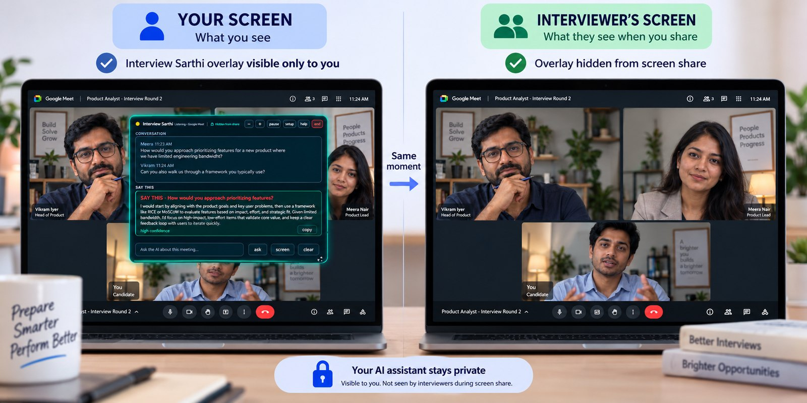

Home › Can the interviewer see my screen? What Teams, Zoom and Meet actually transmit
Can the interviewer see my screen?
Short answer: no, not unless you share it. Until you press Share yourself, nothing from your screen reaches the interviewer. When you do share, everyone on the call can see that you are sharing, and they only see the part you picked: one window, one browser tab, or one whole screen. An online test is the exception — that can watch a lot more, and there is a section on it below.
In a normal meeting, screen sharing sends the content you choose to present. What appears depends on the application, operating system, share mode and meeting settings. A managed device or proctored assessment can have additional monitoring.
Technical sources reviewed 15 September 2026. Confirm the sharing requirements with your interviewer before starting.
What each app sends
The words on the buttons differ, but they all work the same way: you pick what to share, and only that leaves your computer.
| App | What you can pick | What they end up seeing |
|---|---|---|
| Microsoft Teams | Your screen, or one window | Pick one window and everything else stays off the call, even windows you move in front of it. |
| Zoom | Your desktop, one window, or part of the screen | Zoom cannot see apps or tabs you did not share, and never lists what else is open. |
| Google Meet | One tab, one window, or the whole screen | Share a Chrome tab and only that tab is sent. Move to another tab and they stop seeing content. |
| Webex | Your screen, one app, or one file | Sharing one app works like Teams: that app only, nothing behind it. |
In every one of them the share is announced on the call and shows an indicator while it runs. Nobody can start one for you.
What you select matters
Teams offers screen and window presentation; Google Meet offers tab, window and entire-screen options. Follow the interviewer's requested share mode. If the choice is yours, select the content needed for the task and check the preview before presenting.
Official instructions: present content in Teams and Google Meet presentation controls. Options can differ by device, browser and administrator policy.
Protect unrelated personal information
Before a rehearsal, close unrelated private documents, pause personal notifications and use a clean workspace. Share only material you have permission to disclose. Never display a password, API key or license key as part of a setup demonstration.
Ask a friend to join a short practice call and describe what they see as you open the editor or presentation you plan to use. Check camera and microphone controls separately from screen sharing. Stop the share when the presentation is finished.
How the overlay stays invisible
Windows provides SetWindowDisplayAffinity with capture exclusion from Windows 10 version 2004. Interview Sarthi sets it on the overlay at startup and never turns it off, so the compositor leaves the window out of anything that records the screen. See the Windows API documentation.
Teams, Zoom, Meet, Webex and OBS all record through the same Windows path, so the overlay is invisible in every one of them. A capture-exclusion feature does not establish whether assistance is allowed: use it within your interviewer's and employer's rules.

Illustration of the two views. Real captures of both are on the home page.
Interview Sarthi shows suggested answers from your own resume during the call, in English, Hindi or Hinglish. The overlay is invisible in screen share in Teams, Zoom and Meet on Windows 10 (2004+) and 11. 30 minutes free, no card.
Get it free from Microsoft Store Passes from ₹99A meeting and an assessment can use different controls
An assessment provider may require a specific browser, application, camera arrangement or share mode. Your device may also be managed by an employer. Read the actual instructions rather than assuming a familiar meeting link means no additional controls exist.
If the rules prohibit outside help, complete the interview without it. Use preparation tools in advance. Our AI interview rules guide explains how to discuss permission and practise appropriately.
Recordings and remote control
Ask whether the call is recorded and how recordings are used. Content visible during the call may be reviewed later. Do not rely on meeting indicators to rule out every possible recording method.
Screen presentation and remote control are different functions. Review any control request carefully and use the platform's controls to end sharing or control when finished. Clarify unfamiliar installation requests with the recruiter through a known contact channel.
Questions people ask most
Can the interviewer see my screen without me sharing it?
No. Nothing from your screen reaches them until you press Share yourself, and when you do, everyone on the call can see that you are sharing. There is no button on their side that opens up your desktop.
Can they see my other tabs and windows?
Only the one you picked. Share a single window and they see that window, even if you move something else in front of it. Share one browser tab and they see that tab. Share your whole screen and they see everything on it, including whatever you switch to.
Can they tell if I switch tabs during the call?
In a normal meeting, no. Teams, Zoom and Meet do not report what you do outside the call. An online test is a different thing: assessment tools often run in a locked browser and do record tab switching, so treat a test link as watched unless it says otherwise.
Can they see my second monitor?
Not unless you share it. When you choose to share your whole screen, it asks you which screen, and the other one is not sent. Look at the small preview before you start, because picking the wrong screen is easy.
Will they see my WhatsApp and email popups?
Yes, if you are sharing that whole screen. A message preview appears to them exactly as it appears to you. Turn on Focus assist on Windows or Do Not Disturb on a Mac before the call, or share just one window instead of the whole screen.
Can they tell if I take a screenshot?
Not in a normal meeting. Teams, Zoom and Meet do not tell anyone. Some online test software does notice, and some stops you taking one at all.
Is the Interview Sarthi window visible when I share my screen?
No. Windows lets an app mark one of its windows as do-not-record. Interview Sarthi switches that on the moment it starts and never switches it off, so Windows leaves that window out of anything that captures the screen. It stays invisible in Teams, Zoom, Meet, Webex and OBS. Whether you are allowed to use help at all is a separate question, and one to settle with your interviewer.
Could the interviewer work out that I am using it?
Not from the screen share, because the window is not in it. They can still notice what anyone would notice in any interview: a long silence before you answer, your eyes moving across the screen, or an answer that sounds read out rather than spoken. Practise with it a few times so it sounds like you.
Checked against each app’s own help pages on 21 September 2026. Online tests differ from one provider to the next, so read the instructions you were sent rather than assuming a familiar meeting link means nobody is watching.
Pre-interview checklist
- Read the instructions on permitted tools and required screen sharing.
- Check app permissions and the actual sharing preview.
- Close unrelated personal material and protect credentials.
- Rehearse the audio, camera and presentation setup on your device.
- Know how to stop sharing and who to contact if something fails.
Continue with online interview preparation, app setup help or Interview Sarthi product facts.